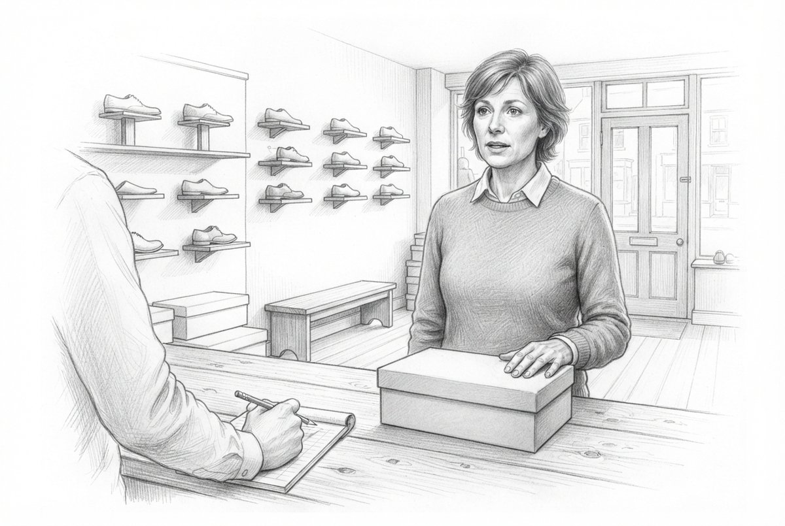
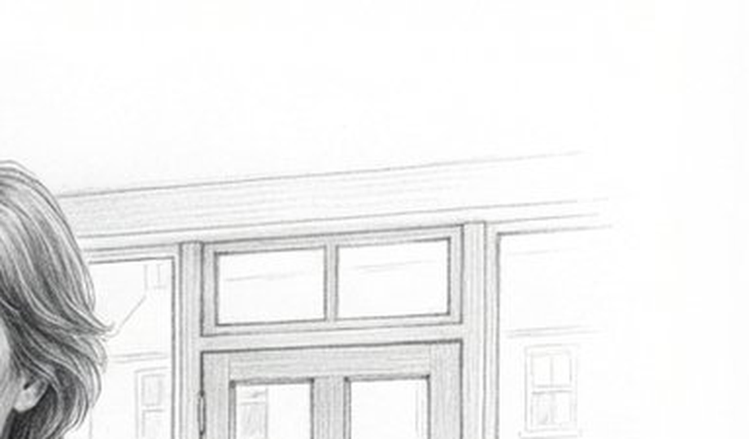
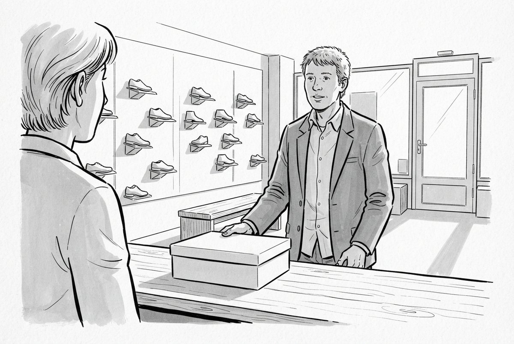
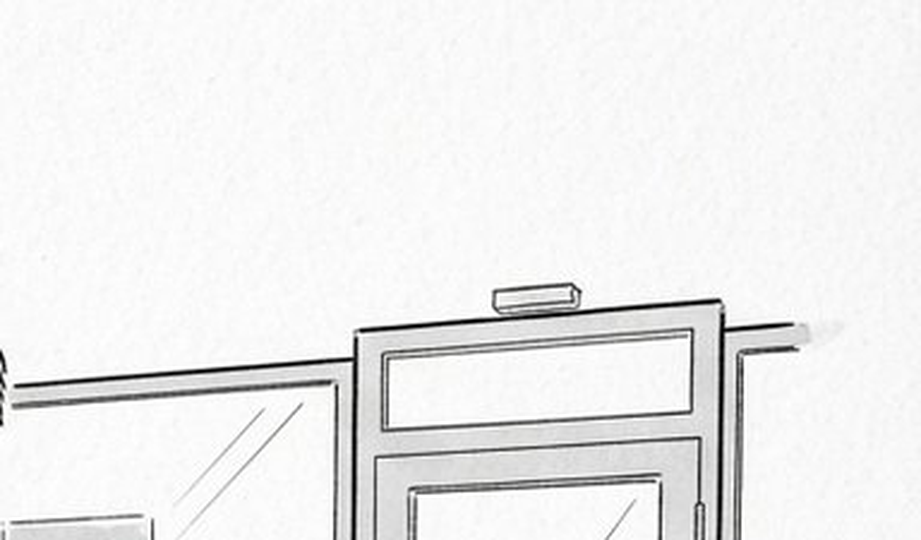
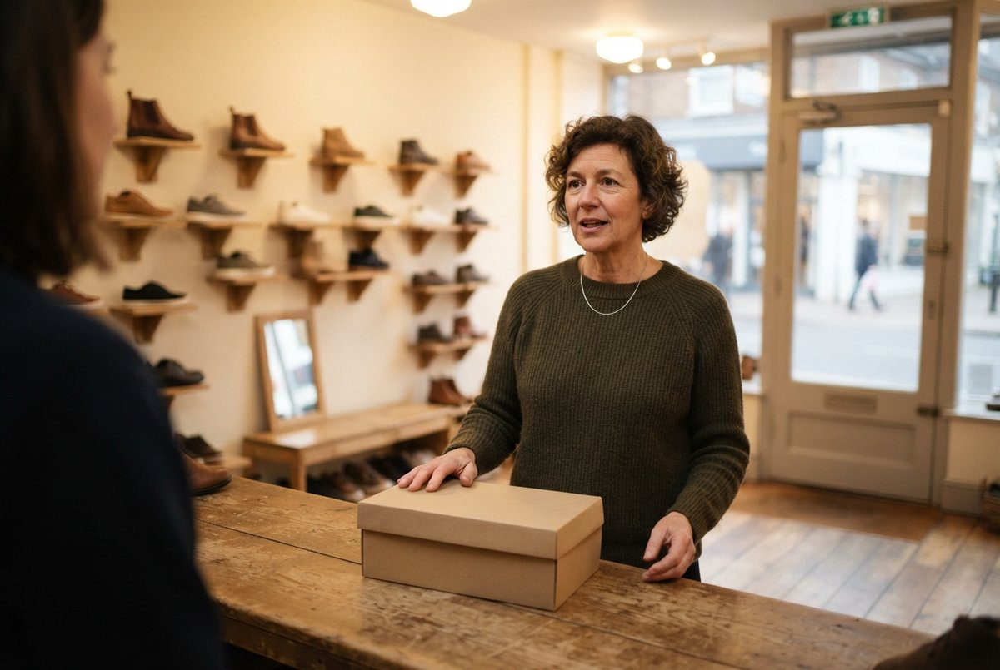

Même scène, mot pour mot, dans les trois : le cas difficile — un client
en face du vendeur, au comptoir. C'est précisément ce que le registre photographique
interdisait, puisque j'avais exclu les personnes pour ne pas castrer un visage.
Un registre se gagne : on juge à la taille où il sera vu, sur le
passage le plus difficile. D'où les deux boutons.
0,10 $ · trois appels, aucune reprise

Crayon, trait et estompe52,8 % de papier · 0,0 % coloréLe registre des 77 dessins du DEA. Sa fiche dit : « évite de choisir un teint de peau, ce qui deviendrait un énoncé ». Ici il a quand même campé une femme précise.

Le haut de la porte, agrandi — l'endroit où le modèle veut écrire.

Encre et lavis, ligne claire47,1 % de papier · 0,0 % coloréSilhouettes franches, beaucoup de respiration. Sa fiche l'accuse de ramener 5,2 % de couleur malgré l'interdiction — pas ici : 0,0 %.

Le haut de la porte, agrandi — l'endroit où le modèle veut écrire.

Photographie réaliste (le témoin)1,4 % de papier · 72,0 % coloréA écrit sur la porte : une enseigne de sortie de secours, pictogramme et lettres, alors que la consigne disait « the walls and the door carry nothing written ».Le haut de la porte, agrandi — l'endroit où le modèle veut écrire.
Banc du 19 septembre 2026 · build/banc_registres_jr.py ·
préambules importés de portfolio-conception/registres/catalogue.py